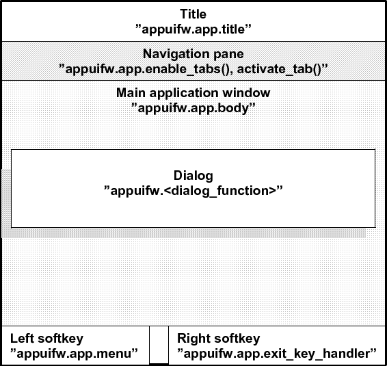
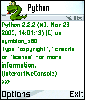
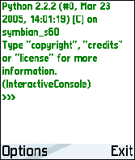
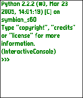

3.1.1 Basics of appuifw Module
Figure 3.2 shows the layout of a S60 application
UI in the normal screen mode and a summary of how it relates to the services
available at the appuifw API. For alternative layouts, see
Figure 3.3.
Figure 3.2:
The different parts of the screen when using the 'normal' layout
|
 |
Figure 3.3:
UI layouts. left: 'normal', middle: 'large', right: 'full'
|


 |
The main application window may be set up to be occupied by a UI control.
A multi-view application can show the different views as tabs in the
navigation pane and react as the users navigate between tabs.
Dialogs always take precedence over the usual UI controls and appear on top
of them.
UI controls are implemented as Python types. These types are available:
UI controls appear on the screen as soon as an instance of the corresponding
Python type is set to the body field (app.body) of the current application UI.
Form is a versatile dialog implemented as a type.
The Content_handler type facilitates interfacing to other UI
applications and common high-level UI components. It is based on the
notion that designated handlers can reduce UI application interaction
to operations on MIME-type content.
The following dialogs are implemented as functions:
- note
- query
- multi_query
- selection_list
- multi_selection_list
- popup_menu
A dialog becomes visible as soon as the corresponding Python function has
been called. The function returns with the eventual user input or
information on the cancellation of the dialog. Form is an
exception; it is shown when its execute method is called.
Release 1.9.1 final , documentation updated on 24 Jan 2009.
See About this document... for information on suggesting changes.